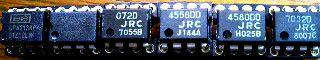

ひよこのページ ディストーション改
2009年01月04日 カテゴリー：自作エフェクター（アナログ）
だいぶ前に作ったひよこのページのディストーションですが、ゲインとトーンの効き方がイマイチだったので作り直しました。
▽回路図
前にバッファを入れたのでいろいろなオペアンプを試せます。定数もちょこちょこ変わってますが音はたいして変わってないと思います。
▽レイアウト
▽PCB（横55.9mm縦38.1mm）
下写真のオペアンプを試してみました。

（左からOPA2134、LM4562、NJM072、NJM4558、NJM4580、NJU7032）
下写真のようにマスキングしてブラインドテストにしてみました。

結果…やはり私の耳にはどれもたいして変わらないように感じます。値段が高いヤツもあるんですが…たぶん波形とか見ても一緒なんじゃないかなぁと思います。
結局私には安いので十分みたいで、オペアンプをとっかえひっかえするよりトーン回路をいじったほうがよさそうです。
（2016年11月9日PCB追加）